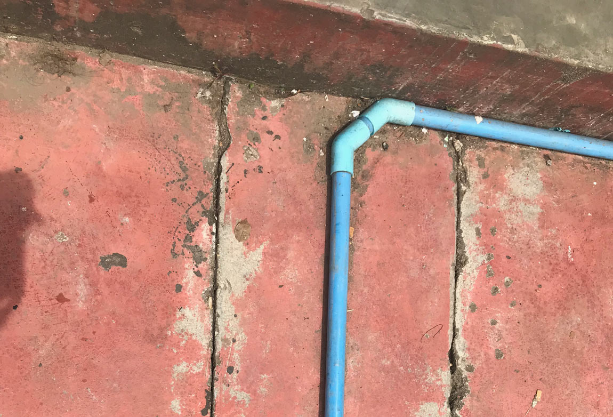
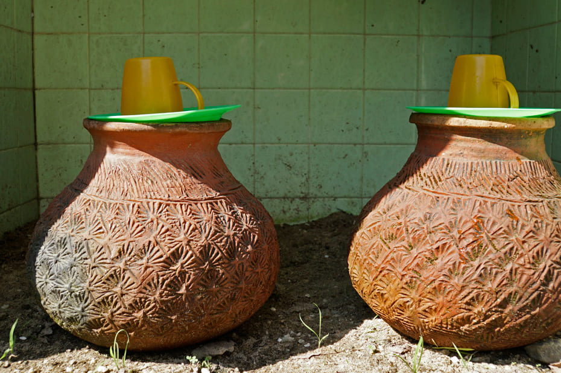
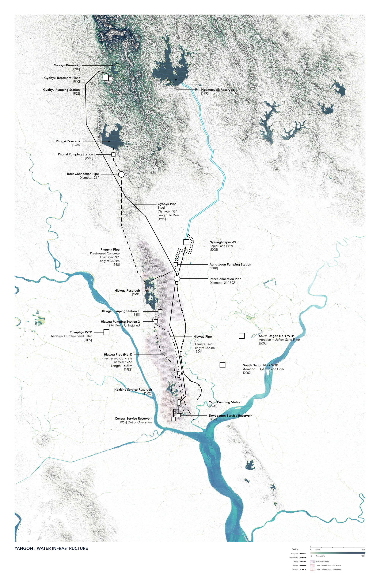
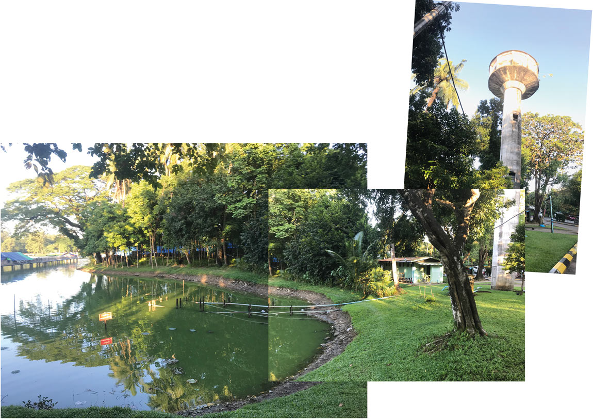
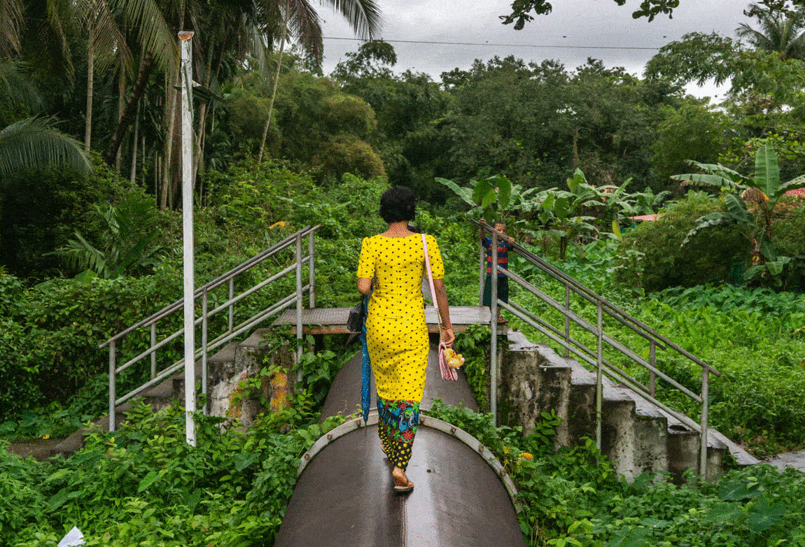
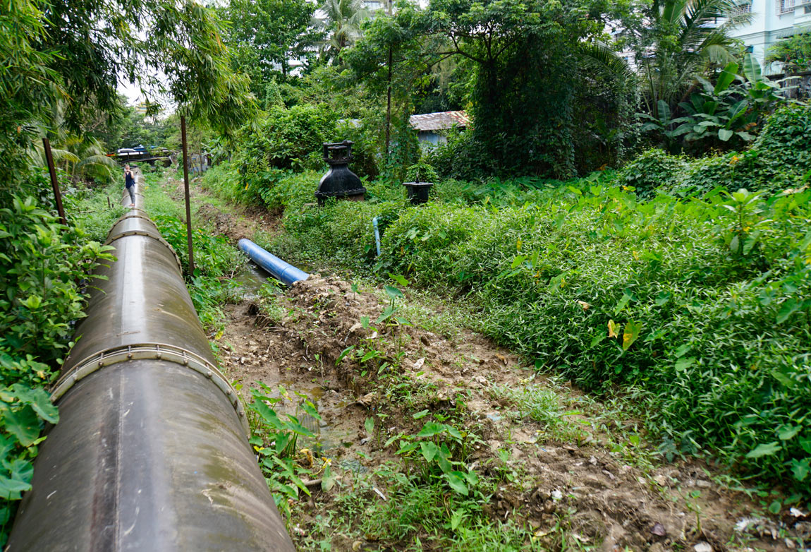
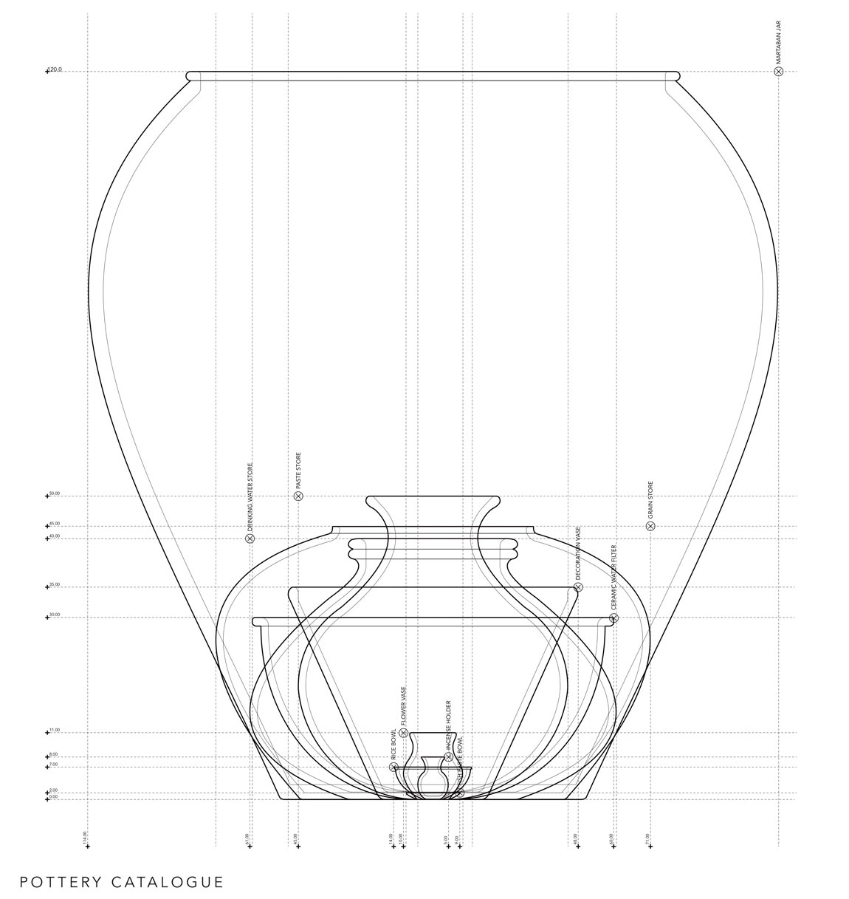

Trans-corporeal exchanges
with water infrastructure
In Yangon, the monsoon is transmuted into drinking water through two very different, though interrelated material systems. The first is the city’s piped water supply system, first laid by the British in 1879, the second is the practice known as Ye Gyan Zin or water charity, practiced in Myanmar since the Bagan Period (1044-1298).
 El Niño infrastructure
Yangon’s piped water supply system can be traced back to the devastating El Niño droughts of 1876 and 1877 when the aquifer feeding its shallow wells and tanks was insufficiently recharged, resulting in contamination and water shortages. As a result, the city’s Municipal Committee began piping water from Royal (Kandawgyi) Lake just north of the city centre to downtown neighbourhoods. Over the course of the next forty years, this system expanded into a vast infrastructural network of reservoirs, pipes, pumping stations and treatments plants extending to Gyobyu and Ngamoeyeik, nearly seventy miles north of the city.
 
Top: Map of Myanmar’s piped water
supply system after E.K. Mon, Y.Y.Hyay,
S.L. Tun and Z.W.Aung, ‘Yangon’s Water
Supply Treatment Issues’,
Bottom: Water infrastructure at Kandawgyi
Lake, Yangon, September 2019.
Top: blue water supply pipes to
individual premises in Yangon.
Bottom: the Gyobyu pipeline in Yankin
Township in Yangon.
Infrastructural agency
As monsoonal water is transported across territory, the materiality of metal, concrete, plastic, pumps, valves, chemicals, bacteria and sand alter its composition. Institutions and practices that maintain, monitor and manage its flows make urban life and rule possible through techniques that materialise socio-political power and inequalities. To this day, many sections of the city remain outside the piped water supply system and are dependent on wells, tanks and bottled water.
Infrastructural excess
Yet there is an excess in infrastructural assemblages that permits the brokering of new relations and affiliations. Water meters can be subverted, pipes can be tapped and alternative routes to citizenship can coalesce around them. For instance, on either side of the main water supply pipe from the Gyobyu reservoir into Yangon, the eight-meter wide corridor kept open for its maintenance and repair has become a bustling commons. The pipe itself is used as a footpath by those who live alongside it, its materiality becoming grounds for insurgent new forms of urban life.
 The Gyobyu supply pipe as a new urban commons. Photographs by Matias Bercowich. Permission for use by Raphael Monnier
Ye Gyan Zin
Ye Gyan Zin is a Burmese tradition of earthenware pots filled with potable water and placed in public places for passers-by. It is practiced as a charitable act of devotion to Buddha and considered to be a meritorious deed that will speed up the attainment of Nirvana. The practice materialises in distinctively shaped clay water pots that are cleaned and filled each day by their donors and topped by a wicker, metal or plastic cap, accompanied by a ladle, glass or plastic mug.
Monsoonal matter
The main infrastructural element of Ye Gyan Zin, the water pot, is traditionally made in villages along the Ayeyarwady River in family-run potteries. A mixture of two types of clay is harvested from the banks of the river and kneaded into a paste. The pots are shaped on a wheel by two people working together, one pumping the wheel by foot, the other shaping the clay by hand. Pot production is traditionally timed to monsoonal rhythms, peaking in the month of Pyatho (late December and January) before the hot summer months set in, when water charity is most needed. The unglazed pots keep water cool through evaporation and those who drink from them describe the water as sweet with the taste of earth from which they were made.

Top: Measured drawing by Charlotte
Grasselli of clay pots produced in
Myanmar showing their relative sizes.
Bottom: Hnnin Ye Pottery, Twante,
Myanmar, September 2019.
Plastic water
Today plastic bottles placed in coolers powered by generators to keep them cool are replacing traditional earthenware pots. The older generation bemoans this change, complaining that the flavour of water from plastic bottles is bad or that drinking from plastic makes them feel hot. But as portable plastic bottles start to facilitate lifestyles in which people take their water with them rather than depend on the uncertain kindness of strangers, water from clay pots not only starts to taste like dirt, the ethics of hospitality it materialises is starting to fade.
Text by Lindsay Bremner.
Design by Jonathan Cane.
El Niño infrastructure
Drawing by John Cook.
Photographs by Lindsay Bremner.
Infrastructural agency
Photographs by Lindsay Bremner
Infrastructural excess
Photographs in gif by Matias Bercowich.
Permission for use by Raphael Monnier.
Other photograph by Lindsay Bremner.
Ye Gyan Zin
Photographs by Charlotte Grasselli and
Lindsay Bremner.
Monsoonal matter
Drawing by Charlotte Grasselli.
Photographs and video by Lindsay Bremner.
Plastic water
Photographs by Charlotte Grasselli and
Lindsay Bremner.